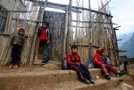

捐资标准为20万元人民币和10万元人民币两种。捐赠20万元人民币，一般用于新建一所农村小学（地方政府将匹配一定资金）；捐赠10万元人民币，主要用于对一所农村小学的危旧校舍进行修缮。学校建成后，统一命名为希望小学，在校园内立一碑记，镌刻捐赠者捐资助学的功绩。中国青基会将与捐赠者签署“捐赠协议”，并与建校所在地省级希望工程实施机构及当地县级人民政府签署《资助建校协议书》，保证捐款及建校事宜的顺利落实。
“希望之星”是从全国希望工程受助生中评选出来的品学兼优的学生。每年约评选出500名。“希望之星奖励基金”以奖学金的方式帮助他们继续中学、大学学业，使这些优秀学生得以顺利成长。
捐赠标准：资金数额不限。超过100万元人民币，可按捐赠方意愿冠名设立专项基金。
资助标准：初中生每人每年600元人民币，资助3年；高中生每人每年800元人民币，资助3年；大学生每人每年1200元人民币，资助4-5年。
希望小学教师肩负着推动落后地区基础教育事业发展的重任。希望小学教育质量的提高，必须依靠一批高素质的教师。希望工程全国教师培训基金即是为全面提高希望小学教师的整体素质而设立的。
基金用途：资助3000元人民币，帮助一名希望小学教师到希望工程全国农科教基地（设在上海），接受为期15天左右的培训。培训内容包括小学教育管理、小学语文教材教法、小学数学教材教法、小学行政管理、农科教结合办学等。
为希望小学捐建希望网校，使农村学校与城市学校共享优秀丰富的教育教学资源，推动农村学校开展信息技术教育，提升农村学校的教育教学水平。
实施“希望工程”，既是发展贫困山区教育的一种有益补充，也是资助失学儿童重返校园的一种办法。据统计，贵州省通过实施“希望工程”共援建希望小学328所，帮助9万名失学儿童重返校园，对支持贫困山区教育事业起到了积极的作用。
面对人口基数大、财政实力弱的现实情况，仅仅依靠政府的努力是不够的，贫困地区的教育事业迫切需要社会各方面的支持和帮助。
捐赠标准：社会捐款1.5万元，同时由受助地方政府匹配0.5万元，可援建一个希望网校单点站，其中0.2万元用于希望网校管理工作经费； 社会捐款10万元，同时由受助地方政府匹配5万元，可援建一间希望网校多媒体教室，其中1.5万元用于希望网校管理工作经费；捐款多多益善，少少无拘,所有捐款统一进入“希望工程远程教育基金”。
“希望工程图书室”公益项目内容为：通过发动社会力量筹集资金，为贫困地区的中小学捐赠图书，建立“希望工程图书室”，以解决这些地区学校图书馆装备用书严重不足的困境，使这些学校的学生不仅有学上，而且有书读，为人才培养贡献力量。
“希望工程图书室”项目的社会捐款，主要用于选购农村小学师生需要的图书，这些图书是参照教育部中小学图书馆装备用书目录选编并经过有关专家精心审定、标准配置，每个图书室包含精品图书不少于1,000册，书目每年更新。“希望工程图书室”公益项目的目标是通过数年的努力，为全国万所希望小学分别建立有5,000册藏书的小型校园图书馆以及100台电脑。